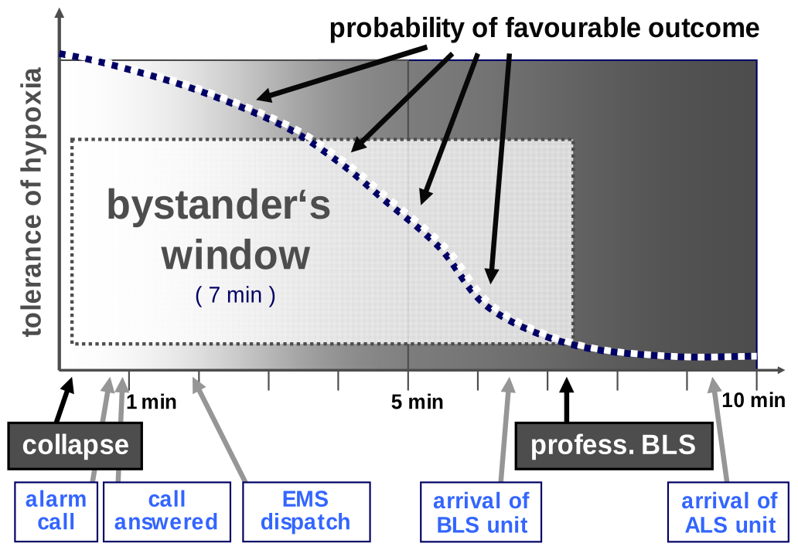
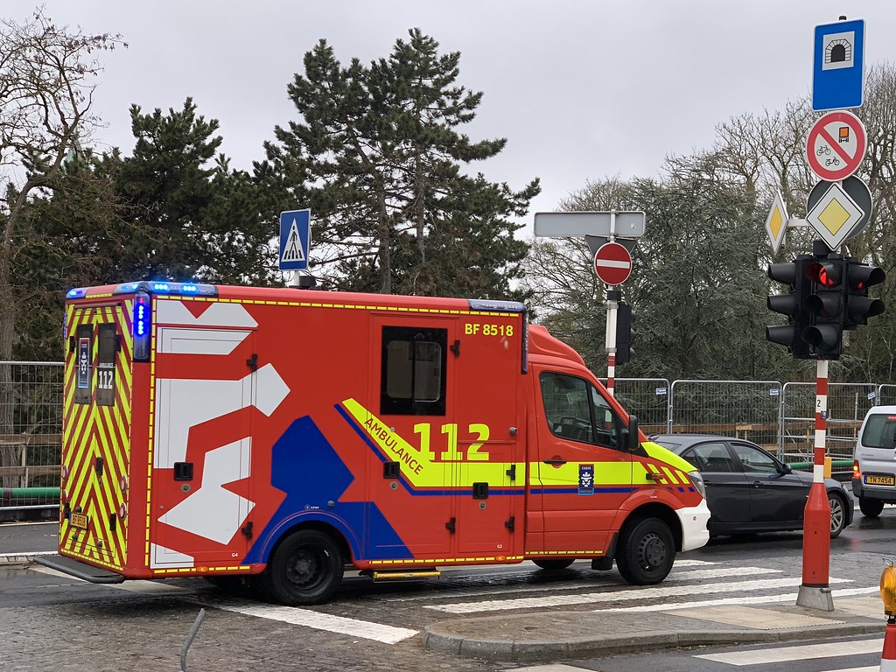
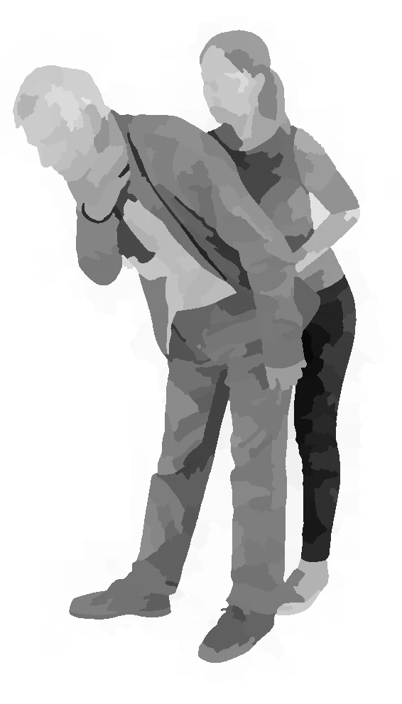
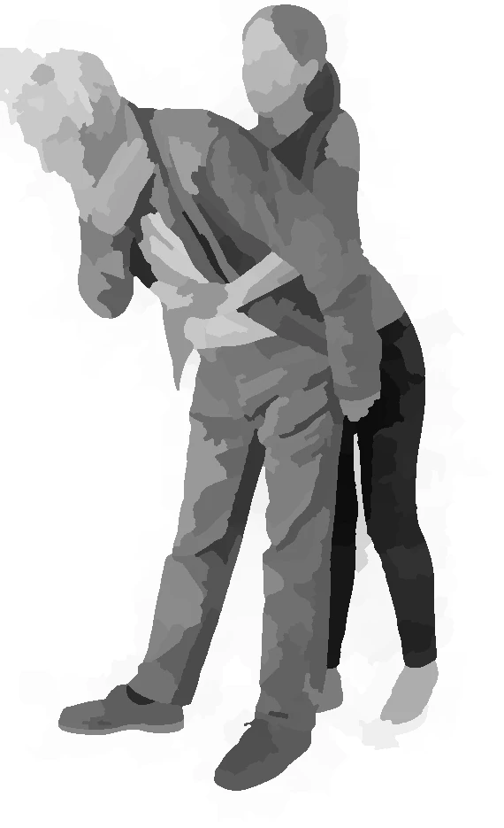
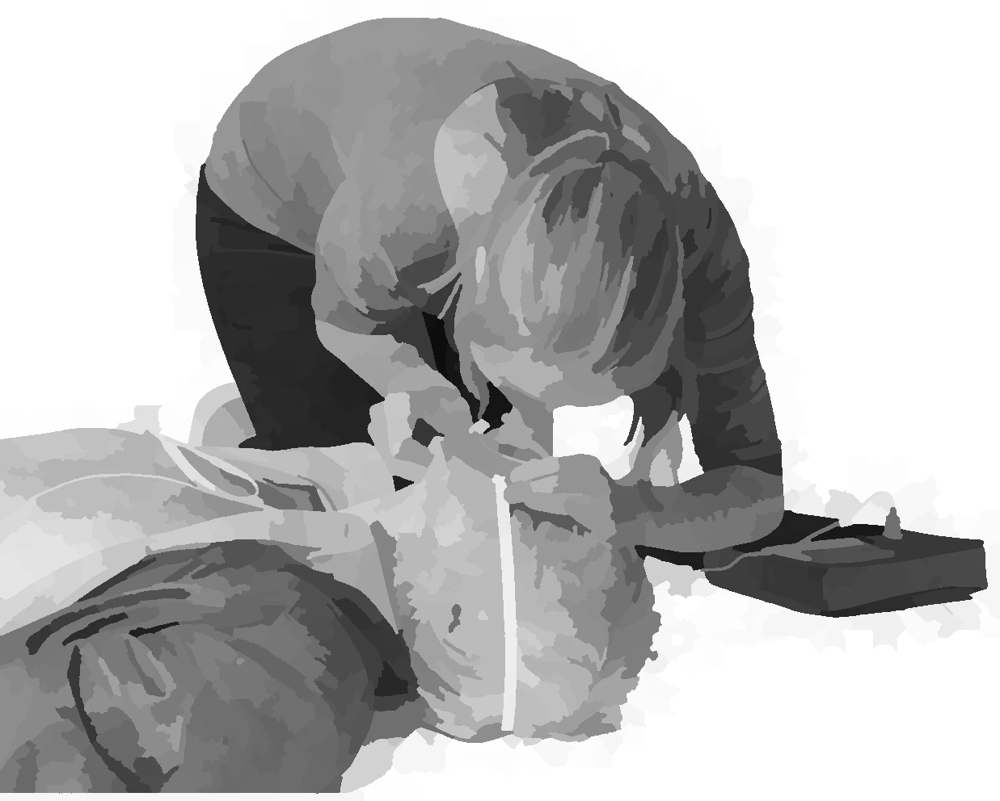

first reponse
cardiac arrest
symptoms of a heart attack
- chest pain
- shortness of breath
- sweatiness
- dizziness
$\longrightarrow$ a heart attack can cause cardiac arrest
Recognizing a heart attack (3D Animation)
some data ...
- sudden OHCA with unsuccessful CPR : third leading cause of death in industrialised nations
- after OHCA : survival rate is 2-10%
- in Europe and US together : 700.000 people die / year
- EMS response time : 6-12 minutes
- following cardiac arrest : brain starts to die after only 3-5 min
cardiac arrest bystander
The Difference Between Cardiac Arrest, Heart Attack, and Heart Failure - 3D Animation
Euro Football Tournament - Christian Eriksen
Out-of-Hospital Cardiac Arrest
role of bystanders
- 70% of OHCA : witnessed by family members, friends and other bystanders $\longrightarrow$ laypeople
- lethal gap on time before EMS : can be bridged by these people
- first minutes after OHCA : still oxygen in the blood and lungs, chest compressions can save hundreds of thousands of lives each year
- CPR by bystanders increases chances of survival 2-4 times
role of mandatory education in school
- highest bystander rates : Scandinavian countries
- reason : education of school children in CPR has been mandatory for decades
check consciousness

check consciousness
- make sure it is safe to approach
- check for any response from the victim
- tilt the head back, lift the chin and check breathing
- if breathing is absent or not normal, CPR is needed
call emergency services - 112
call emergency services - 112
- call 112 and follow their instructions
- if someone is there to help, ask them to call 112 for you, and let them fetch an AED
- Cardiac compressions are most important for survival
- Do not delay or interrupt cardiac compressions
shift head

see listen feel

place hand on thorax

compress
- Place both hands in the centre of the chest
- Compress the chest 5 to 6 cm 100-120 times / min to the rhythm of "Stayin' Alive"
- If you learned how to do it, provide 2 rescue breaths between every 30 compressions, otherwise pump the chest continuously
- Push hard and fast. Don't worry, you can't do any harm
- If an AED arrives, switch it on immediately and follow the instructions
- Once the emergency services arrive, continue until you are told to stop
- Well done! Doing something saves lives and is ALWAYS better than doing nothing
place other hand on to

position for compression

position for ventilation

ask bystander to activate AED

check electrodes of the AED

attach first electrode of the AED

attach second electrode of the AED

warn bystanders

deliver shock

place first arm - lateral safety position

place second arm - lateral safety position

use leg to roll - lateral safety position

lateral safety position

choking

choking - hit the back

choking - heimlich
choking - heimlich
mask ventilation
What is a cardiac arrest?
Réagis!
Heart Attack vs. Cardiac Arrest: What’s the Difference?
Out of Hospital Cardiac Arrest - CPR and AED
CPR in Action (3D look inside the body)
Sources
- World Health Organization (WHO)
- European Resuscitation Council (ERC)
- European Patient Safety Foundation (EPSF)
- International Liaison Committee on Resuscitation (ILCOR)
- World Federation of Societies of Anesthesiologists (WFSA)